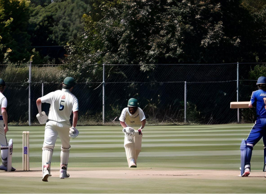
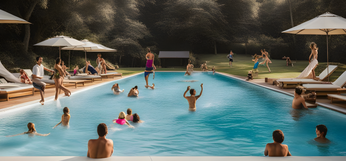

Sports Enthusiasts?
In our small neighbourhood, sports activities play a vital role in fostering a sense of
community and promoting an active lifestyle. You can enjoy various sports activities! If you are into football,
you can check out for some exciting matches live and also be a part of it. For cricket enthusiasts, is the place
to be for friendly matches and tournaments. And if you are looking to cool off and swim, head to our outdoor and
indoor swimming poll where you can take a dip.
Gouda Cricket Club

Gouda Cricket Club GCC is a fantastic place for cricket enthusiasts to come together and
enjoy the sport. They offer a friendly and inclusive environment for players of all skill levels. Whether
you
are a seasoned player or new to the game, Gouda Cricket Club provides opportunities to participate in
matches,
tournaments and practice sessions. Join the club and be a part of the vibrant cricket community in Gouda.
Gouda Football Club

Gouda Football Club is a vibrant and passionate community for football lovers in Gouda.
They offer a range of teams for players of all ages and skill levels to join. Whether you are looking to
compete in local leagues or just enjoy some friendly matches, Gouda Football Club provides a welcoming and
supportive environment. Lace up your boots and get ready for some exciting football action with Gouda
Football Club.
Swimming Pool Gouda

Swimming Pool Gouda is a fantastic place to cool off and have fun in the water. This
swimming pool offers a range of amenities, including indoor and outdoor pools, water slides, and even a
diving board for those looking to make a splash. Whether you are swimming laps, playing with friends, or
simply relaxing by the pool side, Swimming pool gouda is the perfect spot for some aquatic enjoyment. Dive
in and make a splash at Swimming Pool Gouda.